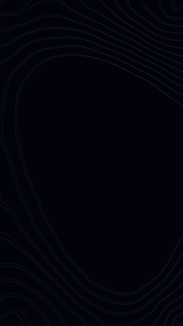
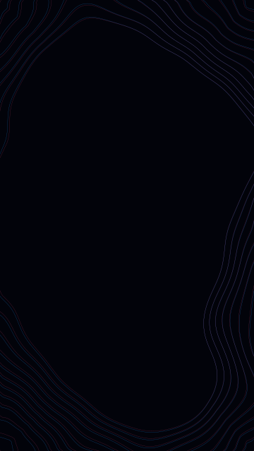
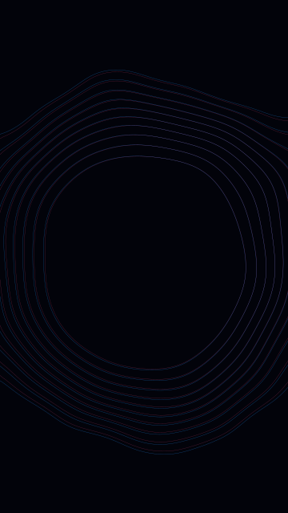
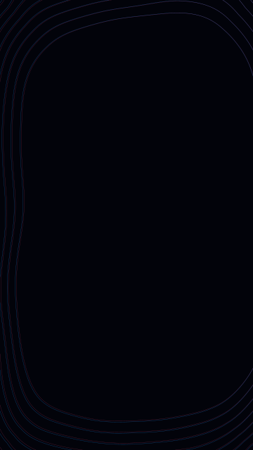
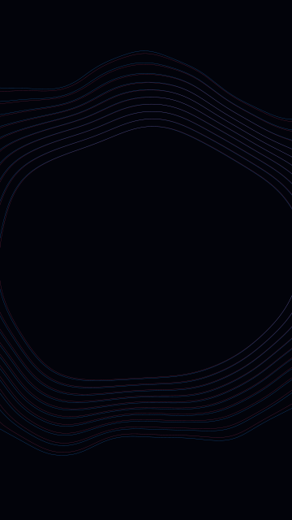
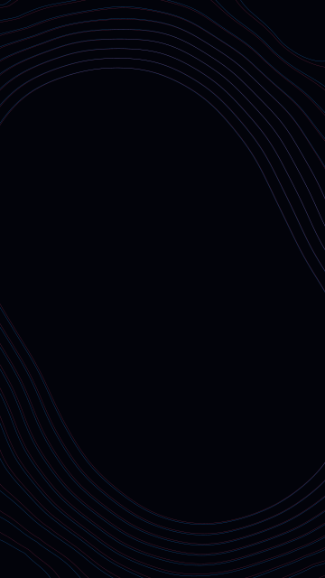

Surface Tension Capability 20260817 v2
Additive S1-S2 tuning and extension of the izzi surface-tension vocabulary: eight deterministic plates covering tuned membranes and pattern, object, and surface-field source compositions.
Izzi generation commit: fde09ecd96622b263cf1c4530a7fc5fd90331204 · 8 passes
-

S1 crossed folds
Four tuned folded membranes with a close beat.
-

S1 tilted chain
Six anisotropic sources in a destabilized chain.
-
S1 boundary veil
Glitch membrane draped across the canvas boundary.
-

S2 pattern ring
Phased ring of related level-set sources.
-

S2 pattern lattice
Staggered source lattice with bounded variation.
-

S2 rotating array
Wave-modulated rotating source array.
-

S2 object clusters
Core-and-lobe object membranes with bounded jitter.
-
S2 surface field
Anisotropic field sharing tilt, aspect, and a strength envelope.